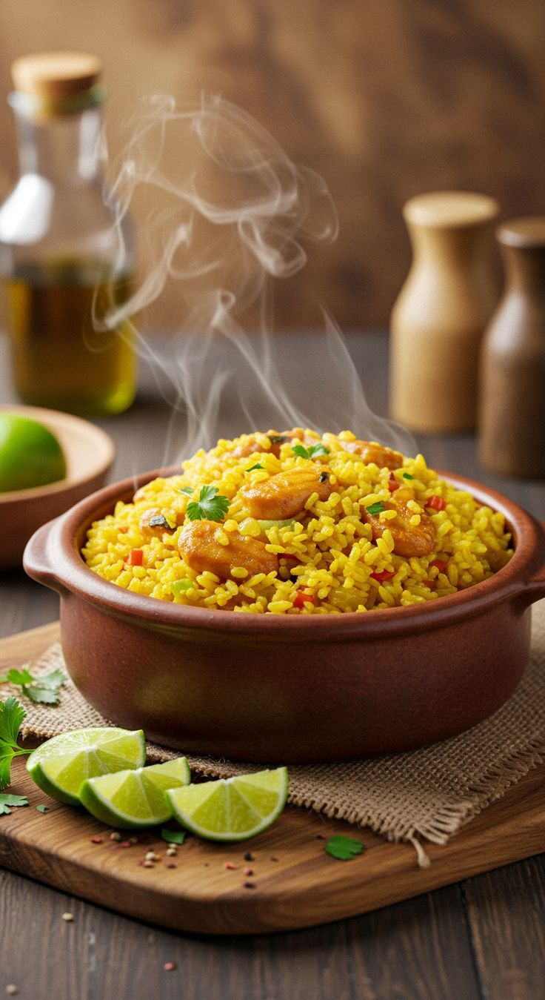

Arroz Carreteiro
Receita tradicional do sul do Brasil, feita com arroz, carne seca e temperos que trazem aquele sabor caseiro de comida campeira.

Ingredientes
Rende 6 porções
- 500 g de carne seca dessalgada e desfiada
- 2 xícaras (chá) de arroz cru
- 1 cebola grande picada
- 3 dentes de alho picados
- 2 tomates picados
- 1 pimentão verde picado (opcional)
- 3 colheres (sopa) de óleo ou banha
- Sal e pimenta-do-reino a gosto
- Cheiro-verde picado para finalizar
Modo de Preparo
Tempo estimado: 1h
- Em uma panela grande, aqueça o óleo ou banha e refogue a cebola e o alho até dourar.
- Acrescente a carne seca desfiada e frite por alguns minutos.
- Adicione os tomates e o pimentão, refogando até murcharem.
- Junte o arroz cru, misture bem e cubra com água quente (aproximadamente 4 xícaras).
- Deixe cozinhar em fogo médio até o arroz ficar macio e a água secar.
- Acerte o sal, finalize com cheiro-verde e sirva bem quente.
Dica do Chef: O arroz carreteiro fica ainda mais saboroso se feito no fogão a lenha. Sirva com salada fresca ou feijão tropeiro.